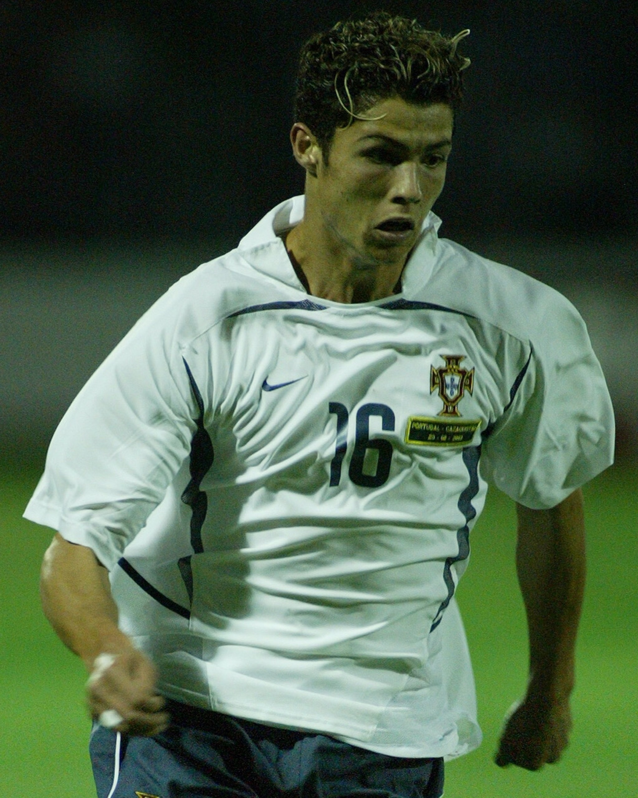
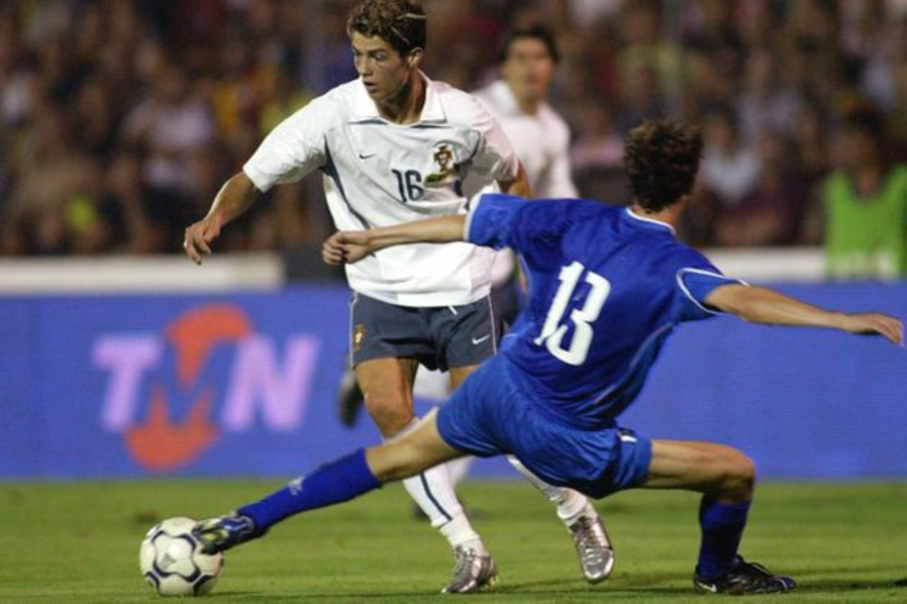
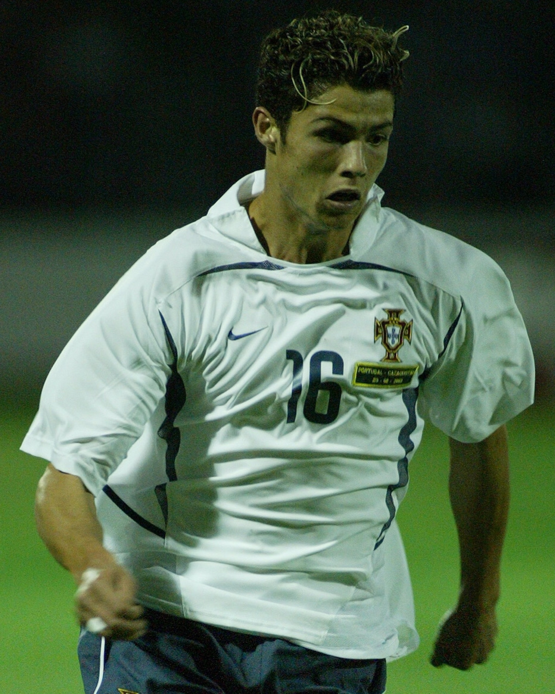
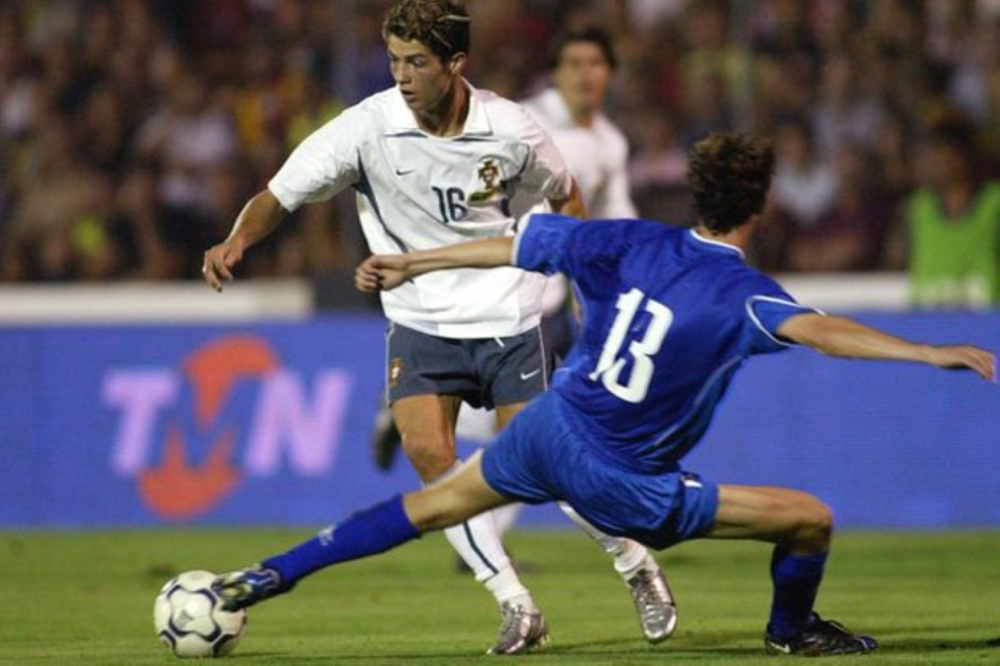

What Was His International Career Like?
The Portugese Icon - O Capitão

 



Cristiano Ronaldo's journey with the Portugal national team began in 2003 when he received his first senior call-up at just 18 years old. Born and raised in Madeira, Portugal, Ronaldo was eligible to represent his country from an early age and had already showcased his immense talent in Portugal’s youth teams. His rapid rise at Sporting CP caught the attention of then-national team coach Luiz Felipe Scolari, who handed him his senior debut in a friendly against Kazakhstan on August 20, 2003. His impressive dribbling, speed, and flair made him an instant prospect for the national team, and within a year, he was selected for Portugal’s squad in Euro 2004. This marked the beginning of an illustrious international career.


Euro 2004, hosted in Portugal, marked the genesis of Cristiano Ronaldo's enduring legacy with the national team. At just 19, the winger, selected by Luiz Felipe Scolari, immediately asserted his presence on the international stage. His dazzling displays of speed, skill, and goal-scoring prowess were pivotal in Portugal's journey to the final. Although Portugal's tournament began with a stunning 2-1 loss to Greece, a match in which Ronaldo scored his inaugural international goal, he quickly became a driving force. Throughout the tournament, his influence grew, evidenced by crucial assists and a decisive goal in the semi-final victory over the Netherlands. These performances propelled Portugal to their first-ever European Championship final. However, despite Ronaldo's best efforts, the team suffered a painful 1-0 defeat to Greece. While the tournament culminated in disappointment, Ronaldo's exceptional performances served as a powerful introduction, announcing the arrival of a generational talent who would redefine Portuguese football and leave an indelible mark on the sport. His ability to perform under pressure, even at a young age, hinted at the incredible career that lay ahead.


World Cup 2006, hosted in Germany, proved to be a pivotal juncture in Cristiano Ronaldo's burgeoning career, as he significantly contributed to Portugal's impressive semi-final appearance, a feat not achieved since their 1966 showing. At the relatively young age of 21, Ronaldo displayed a marked increase in his maturity, seamlessly blending his exceptional technical abilities with unwavering determination to exert a substantial influence throughout the competition. His inaugural World Cup goal, secured in a 2-0 triumph over Iran during the group stage, underscored his growing importance. Notably, he was instrumental in Portugal's knockout phase victories, providing a critical assist in the quarter-final clash against England. While his confidence and leadership qualities were increasingly evident, the tournament was also marked by controversy surrounding his involvement in the incident that resulted in Wayne Rooney's dismissal during the same quarter-final. Regardless, Ronaldo's overall performances garnered widespread acclaim, solidifying his reputation as a world-class player. Portugal's journey culminated in a fourth-place finish, following defeats to France in the semi-finals and Germany in the third-place play-off. The 2006 World Cup served as a significant breakthrough for Ronaldo, effectively announcing his emergence as one of the most elite football talents on the global stage, foreshadowing the immense success he would achieve in the years to come.


Euro 2008, hosted Austria and Switzerland, presented a mixed experience for Cristiano Ronaldo, showcasing his individual brilliance while ultimately resulting in Portugal's premature exit. Arriving at the tournament after a stellar season with Manchester United, Ronaldo was widely regarded as one of its premier talents. He demonstrated this status by scoring a crucial goal against the Czech Republic in the group stage, and consistently terrorized defenses with his blistering speed, exceptional dribbling, and inventive playmaking. As Portugal's captain, he assumed a leadership role, guiding the team through the initial stages of the competition with consistent and impactful performances, culminating in a quarter-final berth. However, their journey was abruptly halted by Germany, who triumphed 2-0 in the knockout phase. Despite Ronaldo's determined efforts to galvanize his teammates, Portugal was unable to breach the German defense, and were eliminated by the eventual tournament finalists. While the early departure was a source of significant disappointment, Ronaldo's contributions throughout Euro 2008 further cemented his reputation as one of the world's elite footballers. The tournament served as a clear demonstration of his expanding influence and growing maturity on the international stage, highlighting his ability to perform at the highest level even when faced with formidable opposition. His ability to carry the team, even when the results did not go his way, showed his growing leadership.


World Cup 2010, hosted in South Africa, proved to be a deeply disappointing chapter in Cristiano Ronaldo's international career, with Portugal's campaign concluding prematurely in the Round of 16. Expectations were high for Ronaldo, but he found it challenging to reproduce the electrifying performances that had defined his reputation. His form during the group stage was inconsistent, although he did manage to score a goal and contribute to Portugal's emphatic 7-0 victory over North Korea. However, Coach Carlos Queiroz's tactical approach, which emphasized a more defensive and cautious style, significantly restricted Ronaldo's attacking freedom and limited his ability to influence the game. The team's overall play lacked fluidity and cohesion, hindering their offensive capabilities. In the knockout phase, Portugal drew a formidable opponent in Spain, the eventual tournament winners. 1 Despite Ronaldo's determined efforts and flashes of brilliance, Portugal succumbed to a 1-0 defeat, ending their World Cup journey. Although the tournament did not yield the desired results for Ronaldo or the Portuguese team, moments of his individual skill and potential were still very apparent. Even though he could not carry the team to victory, his dedication to the sport was on full display. The tournament, in the end, was largely viewed as a setback for Ronaldo on the international stage.


Euro 2012, hosted in Poland and Ukraine, showcased Cristiano Ronaldo at his peak, delivering one of his most compelling performances in a major international tournament, propelling Portugal to the semi-finals. While Portugal's initial group stage matches were marked by inconsistency, Ronaldo's individual brilliance soon ignited the team's campaign. He displayed remarkable composure and skill, scoring pivotal goals, most notably a decisive brace against the Netherlands, which secured Portugal's advancement to the knockout stages. In the quarter-final clash against the Czech Republic, Ronaldo's powerful header proved to be the difference-maker, further highlighting his crucial role in the team's success. As Portugal progressed to the semi-finals, Ronaldo's influence grew exponentially. His dynamic attacking play, characterized by his speed, agility, and precision, consistently posed a significant threat to opposing defenses. The semi-final against Spain, however, ended in a heart-wrenching penalty shootout defeat. A controversial aspect of the match was that Ronaldo was slated to take one of the final penalties, but due to the order chosen by the coach, he did not get the chance. Despite this painful elimination, Ronaldo's leadership and exceptional performances throughout Euro 2012 solidified his status as one of the world's preeminent footballers. His ability to elevate his team's performance, even under immense pressure, was a testament to his exceptional talent and unwavering determination. His individual brilliance, coupled with his unwavering commitment, left an indelible mark on the tournament, even in defeat.


World Cup 2014, hosted in Brazil, proved to be a deeply challenging and ultimately disappointing experience for Cristiano Ronaldo and the Portuguese national team. Hampered by a persistent and debilitating knee injury, Ronaldo's physical condition became a central concern throughout the tournament, significantly impacting his ability to perform at his typically exceptional level. Despite his determination and unwavering commitment, his performances fell short of the lofty standards he had established throughout his illustrious career. Even with his physical limitations, Ronaldo still managed to contribute a vital goal against Ghana in Portugal's final group stage match, securing a 2-1 victory. However, the team's earlier defeats to Germany and the United States proved insurmountable, leaving them in third place in Group G and preventing their advancement to the knockout rounds. The 2014 World Cup campaign, therefore, stands as a stark reminder of the challenges posed by injuries in elite sports. Ronaldo's individual brilliance, although evident in flashes, was ultimately insufficient to overcome the team's collective struggles and the significant limitations imposed by his physical condition. It was a tournament where the sheer will of a player could not overcome the physical limitations imposed by the body, and the overall team's performance.


Euro 2016, hosted in France, stands as a monumental achievement in Cristiano Ronaldo's career, a testament to his unwavering determination and leadership, as he captained Portugal to their inaugural major international title. The tournament began with unexpected hurdles, including a challenging group stage where Portugal drew two of their three matches, testing the team's resilience. However, Ronaldo's leadership and unwavering resolve proved to be the driving force behind their success. He demonstrated his crucial role by scoring a vital brace against Hungary in the final group stage match, securing Portugal's progression to the knockout rounds. 1 In the round of 16 against Croatia, Ronaldo provided a pivotal assist, demonstrating his ability to contribute in critical moments. In the semi-final against Wales, he inspired his team with his relentless energy and a decisive goal, propelling Portugal to the final. The final against France presented an unexpected challenge, as Ronaldo was forced to leave the field in the first half due to an injury. 2 Despite his physical absence, his presence remained palpable on the sidelines, where he passionately motivated his teammates. Portugal ultimately emerged victorious, with Éder scoring the decisive goal in extra time. 3 Ronaldo's emotional celebration after the final whistle underscored the profound significance of this triumph. Euro 2016 represented a watershed moment in Ronaldo's career, fulfilling his long-held ambition of leading Portugal to glory. His leadership, even when injured, showed his dedication to the team. This victory not only solidified his legacy as one of football's most iconic figures but also etched his name into the annals of Portuguese football history, cementing his place as a national hero.


World Cup 2018, hosted in Russia, presented a mixed bag for Cristiano Ronaldo, showcasing his individual brilliance while ultimately resulting in Portugal's premature exit in the Round of 16. Ronaldo's tournament began with a dazzling display of skill, most notably his remarkable hat-trick against Spain in their opening match. His performance was punctuated by a breathtaking free-kick in the closing moments, securing a dramatic 3-3 draw and immediately establishing him as a tournament frontrunner. He continued his scoring streak with a decisive goal in a 1-0 victory over Morocco, further cementing his status as one of the competition's most impactful players. However, despite Ronaldo's exceptional individual contributions, Portugal's offensive efforts lacked consistent potency. The team struggled to dismantle well-organized defenses in the knockout stages, highlighting a lack of cohesive attacking strategies and supporting play. In the Round of 16, Portugal faced Uruguay, and despite Ronaldo's determined efforts, they succumbed to a 2-0 defeat. He was unable to generate the decisive moment needed to shift the game's momentum. While Ronaldo's individual performances were undeniably impressive, they were ultimately insufficient to overcome the team's overall shortcomings. The lack of reliable support from his teammates, coupled with tactical limitations and crucial lapses in key moments, contributed to Portugal's early departure from the tournament. This World Cup campaign highlighted the inherent difficulty of single-handedly carrying a team in a competition of such high caliber, even for a player of Ronaldo's extraordinary talent.
The 2019 UEFA Nations League served as a resounding affirmation of Cristiano Ronaldo's enduring influence on the international stage, as he spearheaded Portugal's victorious campaign in the tournament's inaugural edition. Throughout the competition, Ronaldo's contributions were nothing short of pivotal, with his exceptional leadership qualities and prolific goal-scoring prowess proving to be the driving force behind Portugal's success. His remarkable hat-trick in the semi-final clash against Switzerland, a masterclass in clinical finishing, secured a 3-1 victory and propelled Portugal into the highly anticipated final. 1 In the decisive match against the Netherlands, Ronaldo's vast experience and commanding presence were instrumental in guiding his team to a hard-fought 1-0 victory. His ability to perform under the immense pressure of a major final, coupled with his unwavering leadership, was crucial in securing Portugal's second major international trophy, following their triumph at Euro 2016. The Nations League victory not only added another prestigious title to Ronaldo's already illustrious career but also further solidified his legacy as one of the greatest footballers of all time. His instrumental role in Portugal's success underscored his unique ability to inspire and elevate his teammates, solidifying his status as a true icon of the sport. His contributions extended beyond mere goals, but to the overall morale and tactical discipline of the team.
Euro 2020, delayed until 2021 due to the global pandemic, witnessed Cristiano Ronaldo delivering a series of captivating performances, even though Portugal's journey ended prematurely in the Round of 16. Ronaldo's tournament began with a flourish, as he scored a brace against Hungary in Portugal's opening match, a feat that propelled him to a new record of 11 goals in European Championship history, solidifying his position as the competition's all-time leading scorer. He further augmented his tally with two more goals in a compelling 3-0 victory over Hungary, ultimately securing the tournament's Golden Boot award with a total of five goals. Despite Ronaldo's remarkable individual achievements, Portugal's defensive vulnerabilities proved to be their undoing. They were eliminated by Belgium in the Round of 16, succumbing to a narrow 1-0 defeat in a closely contested match. Ronaldo's performances throughout the tournament were a testament to his enduring quality and unwavering dedication, reinforcing his status as one of the world's elite footballers. However, the team's early exit was a source of significant disappointment for both Ronaldo and the Portuguese supporters. The tournament highlighted his ability to continually break records and achieve individual greatness, even as the team fell short of expectations. Regardless, Euro 2020 served to further solidify Ronaldo's enduring legacy as one of the most remarkable international players in the history of the sport, showcasing his ability to perform at the highest level even in the twilight of his career.
The 2022 Nations League campaign proved to be a significant hurdle for Cristiano Ronaldo and the Portuguese national team, as their hopes of retaining the 2019 title were dashed. Despite Ronaldo's unwavering commitment and continued status as a crucial player, Portugal's journey ended prematurely with a third-place finish in their group, preventing them from advancing to the semi-finals. While Ronaldo contributed significantly during the group stages, showcasing his enduring goal-scoring ability and playmaking skills, the team struggled with a lack of consistent performance. Throughout the tournament, Portugal faced stiff competition from formidable opponents like Spain and Switzerland, ultimately failing to secure the necessary points to qualify for the final four. Although Ronaldo's individual performances remained at a high standard, the team's overall cohesion and defensive vulnerabilities were apparent, hindering their ability to achieve the desired results. This campaign highlighted the delicate balance required for success in international football, where even the presence of a world-class player like Ronaldo cannot guarantee victory if the team's collective performance is lacking. The early exit left a palpable sense of disappointment within the team and among their supporters, underscoring the challenges of maintaining consistent success in highly competitive tournaments. It also demonstrated the increasing difficulty of international football, where tactical organization and team unity are as important as individual brilliance.
Cristiano Ronaldo's 2022 World Cup campaign in Qatar was a complex and emotionally charged experience, characterized by both historic achievements and significant on-field challenges. He etched his name into the record books by becoming the first player to score in five separate World Cup tournaments, converting a penalty in Portugal's hard-fought 3-2 victory over Ghana during the group stage. However, the tournament was also overshadowed by controversy and a noticeable decline in his usual dominant form. Notably, coach Fernando Santos's decision to bench Ronaldo for crucial knockout matches sparked considerable debate and highlighted a shift in the team's dynamic. Ronaldo's visible frustration reflected the challenges of adapting to a changing role, yet he maintained professionalism and contributed when given the opportunity, including his goal during the group stage. Portugal's World Cup journey concluded in the quarter-finals with a 1-0 defeat to Morocco, a historic moment that saw the African nation become the first from their continent to reach a World Cup semi-final. This elimination marked a poignant moment, signifying the end of an era for both Ronaldo and the Portuguese national team. The tournament served as a stark reminder of the relentless march of time in professional sports, as Ronaldo confronted the realities of a shifting international football landscape. Despite the team's early exit and his personal struggles, Ronaldo's historic achievement and his enduring presence on the world stage ensured that he left an indelible mark on the competition. The tournament showed that even a legend must adapt to the evolving nature of the sport, and the changing needs of the team.
Euro 2024 presented a poignant and ultimately disappointing conclusion to Cristiano Ronaldo's storied European Championship journey, as Portugal's campaign ended in a heart-wrenching quarter-final defeat to France via penalty shootout. Despite entering the tournament with high expectations and Ronaldo himself demonstrating exceptional form, Portugal's aspirations were thwarted by a resolute French side. The match, a tense and tactical affair, remained scoreless even after extra time, setting the stage for the dramatic penalty decider. Throughout the competition, Ronaldo exhibited his enduring class, showcasing his veteran leadership and undeniable skill. He contributed significantly with crucial goals and assists, proving that even in the latter stages of his career, he remained a force to be reckoned with. However, Portugal's inability to penetrate France's formidable defense in the crucial knockout stage encounter proved decisive. France's strategic organization and defensive solidity ultimately proved insurmountable, extinguishing Portugal's hopes of progressing further in the tournament. While the early exit was a bitter pill to swallow for Ronaldo and his teammates, his individual performances throughout Euro 2024 served as a powerful reminder of his unparalleled talent and unwavering commitment to the national team. Even as his international career approaches its twilight, Ronaldo's contributions to the competition solidified his position as one of the most iconic and influential figures in the history of the European Championships. The tournament highlighted that even a player of his caliber cannot guarantee success, and that team dynamics and opponent strength play a large factor in tournament results.
Cristiano Ronaldo's international career with Portugal has been a long and decorated one, marked by both individual brilliance and team achievements. From his debut at 18 in 2003 to his continued presence in his 40s, he has consistently performed at a high level, setting records and leading Portugal to major titles like Euro 2016 and the 2019 Nations League. While facing challenges and controversies, particularly in later tournaments, he remains a key figure for Portugal, even hinting at playing in the 2026 World Cup. His journey reflects a blend of extraordinary talent, unwavering dedication, and a relentless pursuit of success, solidifying his legacy as one of football's greatest players.